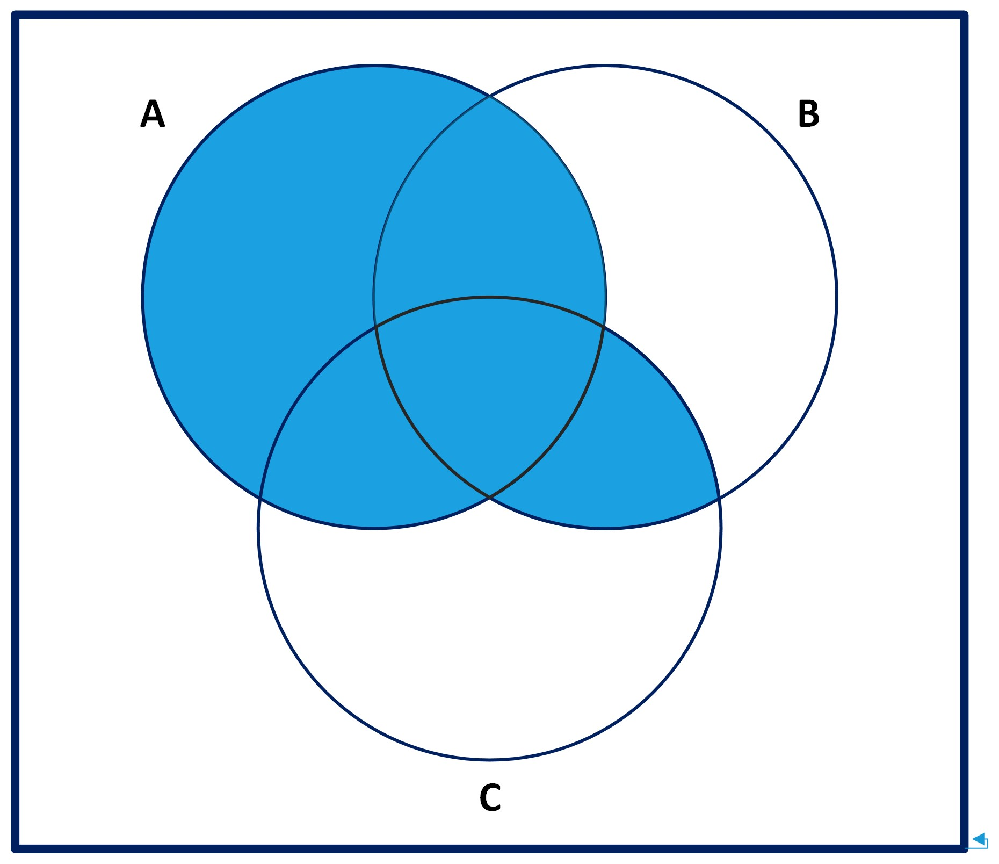
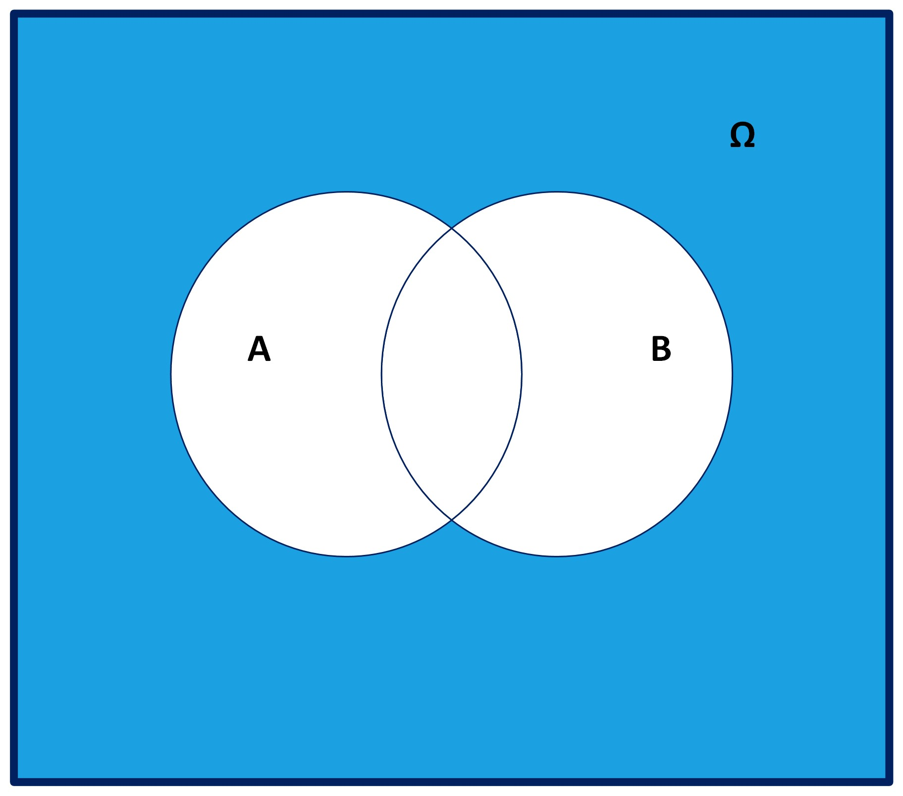

2 Teoría elemental de la probabilidad
2.1 Definiciones básicas
Definición: experimento aleatorio
Un experimento que repetido en las mismas condiciones puede dar resultados diferentes, pero que a largo plazo son predecibles recibe el nombre de experimento aleatorio.
Daremos nombres a distintos tipos de sucesos:
Definición: espacio muestral y tipos de sucesos
- Llamaremos suceso elemental a cada uno de los posibles resultados del experimento aleatorio.
- Llamaremos espacio muestral (\(\Omega\),\(E\)) al conjunto formado por todos los sucesos elementales del experimento aleatorio.
- Llamaremos suceso a cualquier subconjunto del espacio muestral.
- Suceso seguro o cierto: ()
- Suceso imposible o vacío: ()
- Partes de un conjunto: \(\mathcal{P}(\Omega)\): conjunto de todos los sucesos del experimento aleatorio (es decir, el conjunto de todos los subconjuntos de \(\Omega\))
A continuación describimos el clásico experimento del lanzamiento de un dado.
Ejemplo
Consideremos el experimento aleatorio que consiste en lanzar un dado. El espacio muestral de este experimento es \(\Omega=\{1,2,3,4,5,6\}\) o las figuras de las caras del dado.
Si lo representamos gráficamente, tendríamos:
Por comodidad y conveniencia se opta por representar el espacio muestral por \[\Omega = \{1,2,3,4,5,6\}.\]
Recordemos la notación \(\mathcal{P}(\Omega)\) que usamos para referirnos al conjunto de todos los subconjuntos de \(\Omega\). Este conjunto se llama conjunto de partes de \(\Omega\).
Ejercicio
¿Cuantos elementos contiene el conjunto de partes de \(\Omega\) del experimento anterior?
Veamos algún ejemplo menos clásico. Podemos considerar el experimento aleatorio que consiste en calcular los \(n\) gramas de una palabra escogida al azar.
Ejemplo \(n\)-gramas
Se define un \(n\)-grama de una palabra como el conjunto de \(n\) letras consecutivas de la misma (contando los blancos de inicio y final de palabra que marcamos como “_”).
Consideremos el experimento aleatorio que consiste en escoger al azar un 3-grama de la palabra “_Baleares_”. Vamos a escribir el espacio muestral y algunos sucesos elementales del mismo.
En este caso, si consideramos la palabra “_Baleares_”, el espacio muestral del experimento sería:
\[\Omega=\{\_Ba, Bal, ale, lea, ear, are, res, es\_\}\]
Algunos sucesos serían:
- 3-gramas que empiezan por \(a\): \(\{ale,are\}.\)
- 3-gramas de inicio y final de palabra: \(\{\_Ba,es\_\}.\)
- 3-gramas que contengan una \(l\): \(\{Bal,ale,lea\}.\)
Existen bases de datos que estudian la frecuencias de \(n\)-gramas de caracteres en textos en diferentes idiomas; generalmente de palabras. Por ejemplo, en español, los bi-gramas de sílabas más frecuentes son “EN” (3.01%) y “DE” (2.77%) y los tri-gramas de sílabas son “QUE” (1.66%) y “ENT” (1.38%). Podéis consultar más estadísticas, por ejemplo, en Stefan Trost Media frecuencias de sílabas en español.
2.1.1 Operaciones con sucesos
Si tenemos dos sucesos \(A,B\subseteq \Omega\), podemos definir:
- \(\Omega\): suceso total o seguro.
- \(\emptyset\): suceso vacío o imposible.
- \(A\cup B\): suceso unión; el que ocurre si sucede \(A\) o \(B\).
- \(A\cap B\): suceso intersección; el que ocurre si sucede \(A\) y \(B\).
- \(A^c\): suceso complementario el que sucede si NO sucede \(A\).
- \(A\setminus B = A\cap B^c\): suceso diferencia, que acontece si sucede \(A\) y NO sucede \(B\).
Sucesos incompatibles
Dos sucesos cualesquiera \(A\) y \(B\) son incompatibles (o disjuntos) cuando \(A\cap B=\emptyset\).
Otro ejemplo se observa el sexo y la lateralidad de los estudiantes de una clase.
Ejemplo
Supongamos que el sexo se divide entre Mujeres y Hombres y la lateralidad en diestros y zurdos. Vamos a definir el espacio muestral, los sucesos elementales y a realizar algunas operaciones entre ellos.
- Estudiantes de esta clase: ().
- Mujeres de esta clase: (A).
- Estudiantes que son zurdos: (B).
Algunas operaciones entre los sucesos anteriores serían:
- \(A\cup B\): Estudiantes que son mujeres o que son zurdos.
- \(A\cap B\): Mujeres de esta clase que son zurdas.
- \(A^c\): Hombres de esta clase.
- \(A\setminus B\): Mujeres de la clases que NO son zurdas.
- \(B\setminus A\): Hombres de la clase que son zurdos.
- ¡Cuidado! No son incompatibles.
2.1.2 Propiedades
Propiedades
Conmutativas:
\[A\cup B=B\cup A, \quad A\cap B=B\cap A\]
Asociativas:
\[ \begin{aligned} A\cup(B\cup C)=(A\cup B)\cup C, \\ A\cap(B\cap C)=(A\cap B)\cap C. \end{aligned} \]
Distributivas
\[ \begin{aligned} A\cap & (B\cup C)=(A\cap B)\cup (A\cap C),\\ A\cup & (B\cap C)=(A\cup B)\cap (A\cup C). \end{aligned} \]
Veamos algunos diagramas que nos ayuda a demostrar las propiedades anteriores.
| \(A\) | \(B\cap C\) | \(A\cup (B\cap C)\) |
|---|---|---|
 |
 |
 |
| \(A\cup B\) | \(A\cup C\) | \((A\cup B)\cap (A\cup C)\) |
|---|---|---|
 |
 |
Complementario del complementario
\[(A^c)^c=A\]
| \(A\) | \(A^c\) | \((A^c)^c\) |
|---|---|---|
 |
 |
|
Leyes de De Morgan
\[(A\cup B)^c=A^c\cap B^c\]
| \(A\cup B\) | \((A\cup B)^c\) |
|---|---|
 |
 |
\[(A\cup B)^c=A^c\cap B^c\]
| \(A^c\) | \(B^c\) | \(A^c\cap B^c\) |
|---|---|---|
 |
 |
 |
\[(A\cap B)^c=A^c\cup B^c\]
| \(A\cap B\) | \((A\cap B)^c\) |
|---|---|
 |
 |
\[(A\cap B)^c=A^c\cup B^c\]
| \(A^c\) | \(B^c\) | \(A^c\cup B^c\) |
|---|---|---|
|
|
|
2.2 Definición de probabilidad
La probabilidad de un suceso es una puntuación (score) numérico entre 0 y 1 que mide la verosimilitud de que este evento se produzca.
Esta verosimilitud puede estar justificada por:
Estimación personal
Estimación de expertos
La frecuencia con la que se da
Cálculo formal
Definición formal de probabilidad
Sea \(\Omega\) el espacio muestral de un experimento aleatorio. Supongamos que el número de posibles resultados, por el momento, es finito.
Una probabilidad sobre \(\Omega\) es una aplicación \(P:\mathcal{P}(\Omega)\to [0,1]\) con las siguientes propiedades:
- \(0\leq P(A)\leq 1\), para todo suceso \(A\).
- \(P(\Omega)=1\).
- Si \(\{A_1,A_2,\ldots,A_n\}\) son sucesos disjuntos dos a dos, entonces
\[ P(A_1\cup A_2\cup \cdots \cup A_n)=P(A_1)+P(A_2)+\cdots +P(A_n) \]
Si \(a\in \Omega\) es un suceso elemental cometeremos el abuso de notación de poner \(P(a)\) en lugar de \(P(\{a\})\).
Veamos un ejemplo real de cómo se calcula la probabilidad de un suceso.
Ejemplo
En la página de la Fundación Banco de Sangre y Tejidos de las Islas Baleares (17-08-2023) podemos encontrar información sobre los porcentajes de tipos de sangre de los donantes de las Islas Baleares:
\[A: 46\%;\ B: 7.5\%;\ AB: 3.5\%;\ O: 43\%.\]
¿Cuál es la probabilidad de que un balear donante de sangre no sea del tipo O?
Experimento aleatorio: tipo de sangre de un paciente humano:
\[\Omega=\{\mbox{A,B,AB,O}\}\]
Probabilidad de un suceso: se asimila al porcentaje observado de individuos.
Suceso: \(\{\mbox{O}\}^c=\{\mbox{A,B,AB}\}\).
\[P(\{\mbox{O}\}^c)\!=\!P(\{\mbox{A,B,AB}\})\!=\! P(\mbox{A})+P (\mbox{B})+P(\mbox{AB})\!=\!0.57.\]
Necesitaremos tener propiedades y fórmulas prácticas para poder calcular probabilidades de sucesos más complejos. Veamos algunas de ellas.
Propiedades básicas de la probabilidad
\(P(\emptyset)=0\).
\(\scriptsize{P(A\setminus B)=P(A)-P(A\cap B)}\) porque \(\scriptsize{P(A)=P(A\setminus B)+P(A\cap B)}\).

Si \(B\subseteq A\), entonces \(0\leq P(B)\leq P(A)\).
\(P(A^c)=1-P(A)\).
Una identidad muy utilizada es la de la probabilidad de la unión de dos sucesos cualesquiera.
Probabilidad de la unión de dos sucesos
\(P(A\cup B)=P(A)+P(B)-P(A\cap B)\)
La demostración analítica de esta propiedad es la siguiente:
\[ \begin{aligned} P(A)+P(B)-P(A\cap B) &= P(A\setminus B)+P(A\cap B)\\ & & +P(B\setminus A)+ P(A\cap B)-P(A\cap B)\\ &= P(A\setminus B)+P(A\cap B)+ P(B\setminus A) \\ &= P(A\cup B).\\ \end{aligned} \]
Probabilidad de la unión de \(n\) conjuntos
Sean \(A_1, A_2,\ldots A_n\) sucesos. Entonces:
\[ P(\cup_{i=1}^n A_i)=\sum_{i=1}^n P(A_i)-\sum_{1\leq i<j\leq n}P(A_i\cap A_j)+\cdots +(-1)^{n-1}P(A_1\cap A_2\cap \cdots \cap A_n). \]
La demostración es sencilla mediante inducción: partimos del caso base de dos sucesos, suponemos que es cierta para \(n\) sucesos y luego la extendemos al caso de \(n+1\) sucesos.
Como comprobación, consideremos un ejemplo genérico con tres sucesos.
\(A=\{1,4,5,6\}\), \(B=\{2,4,6,7\}\) y \(C=\{3,5,6,7\}\). En este caso la fórmula nos da
\[ P(A\cup B\cup C)= P(A)+P(B)+P(C)-P(A\cap B)-P(A\cap C) -P(B\cap C)+P(A\cap B\cap C). \]
Gráficamente tenemos esta situación:

Ahora podemos comprobar la fórmula para este caso.
\[ \begin{aligned} P(A\cup B\cup C)&=P(A)+P(B)+P(C)-P(A\cap B) \\ & & - P(A\cap C)-P(B\cap C)+P(A\cap B\cap C).\\ \end{aligned} \]
Efectivamente tenemos que:
\[P(A\cup B\cup C)=P(1)+P(2)+P(3)+P(4)+P(5)+P(6)+P(7).\]
Una de las formas más intuitiva de asignación de probabilidades es hacer el cociente entre los casos favorables a que acontezca el evento y los casos posibles del experimento; la llamada fórmula de Laplace.
Propiedad
En general dado un suceso \(A=\{a_1,a_2,\ldots,a_k\}\), entonces \[ P(A)=P(a_1)+P(a_2)+\cdots+P(a_k). \]
Fórmula de Laplace: Si todos los sucesos elementales tienen la misma probabilidad, \[ P(A)=\frac{|A|}{|\Omega|}\Big(=\frac{\mbox{casos favorables}}{\mbox{casos posibles}}\Big). \]
En el procesamiento del lenguaje se suelen estudiar las frecuencias de palabras o letras de un determinado idioma. Veamos un ejemplo sobre las frecuencias de las vocales en castellano.
< Ejemplo: Frecuencia de vocales/i>
Los porcentajes de vocales de un determinado idioma (de alfabeto latino) según la Wikipedia son:
\[A: 18.7\%;\ E: 26.1\%;\ I: 25.7\%;\ O: 24.4\%;\ U: 5.1\%.\]
¿Cuál es la probabilidad que una vocal escogida al azar de este idioma sea una E o una O?
El espacio muestral del experimento es \(\Omega=\{A,E,I,O,U\}\).
El suceso que deseamos analizar es \(\{E,0\}\).
Y su probabilidad es
\[P(\{E,O\})=P(E)+P(O)=0.261+0.244=0.505.\]
Otro ejemplo en este caso es sobre un test de drogas en el que se analiza la presencia de cocaína y cannabis en la sangre de los conductores, inspirado en un caso real.
Ejemplo: Consumo de drogas
Según un artículo de El País, en un control especial de la policía el \(0.1\%\) de todos los conductores analizados en un control de tráfico dan positivo en un el test en cocaína, y el \(1\%\) da positivo en cannabis. Un \(1.05\%\) da positivo en alguno de los dos test.
Pregunta: ¿Cuál es la probabilidad que un individuo analizado en el control de drogas escogido al azar no de positivo en ninguno de lo dos test?
Los sucesos elementales del enunciado del problema son:
- \(A\): dar positivo en cocaína; \(P(A)=0.001.\)
- \(B\): dar positivo en cannabis; \(P(B)=0.01.\)
En este caso nos interesa estudiar los sucesos:
- \(A\cup B\): dar positivo en alguno de los dos test; \(P(A\cup B)=0.0105.\)
- \((A\cup B)^c\): no dar positivo en ninguno de los test,por tanto:
\[P((A\cup B)^c)=1-P(A\cup B)=1-0.0105=0.9895.\]
Pregunta: ¿Cuál es la probabilidad que un analizado al azar de positivo en los dos test en cocaína y cannabis?
Los sucesos elementales son:
- \(A\): dar positivo en cocaína; \(P(A)=0.001.\)
- \(B\): dar positivo en cannabis; \(P(B)=0.01.\)
En este caso nos interesa estudiar los sucesos:
- \(A\cup B\): dar positivo en algún de los dos test; \(P(A\cup B)=0.0105.\)
- \(A\cap B\): dar positivo en los dos test
de donde, por tanto:
\[\begin{array}{rl} {P(A\cap B)} &{=P(A)+P(B)-P(A\cup B)}\\ &{=0.001+0.01-0.0105=0.0005}. \end{array}\]
Pregunta: ¿Cuál es la probabilidad de que un conductor analizado de positivo en cocaína pero no en cannabis?
Los sucesos elementales son:
- \(A\): dar positivo en cocaína; \(P(A)=0.001.\)
- \(B\): dar positivo en cannabis; \(P(B)=0.01.\)
En este caso nos interesa estudiar los sucesos:
- \(A\cap B\): dar positivo en los dos test; \(P(A\cap B)=0.0005.\)
- \(A\setminus B\): dar positivo en cocaína pero no en cannabis, por lo tanto tenemos que :
\[P(A\setminus B) =P(A)-P(A\cap B) =0.001-0.0005=0.0005.\]
2.3 Probabilidad condicionada
Probabilidad condicionada
Dados dos sucesos \(A\) y \(B\), con \(P(A)>0\), la probabilidad \(P(B|A)\) de \(B\) condicionado a \(A\) es la probabilidad
- de que suceda \(B\) suponiendo que pasa \(A\),
- de que si pasa \(A\), entonces suceda \(B\),
- de que un resultado de \(A\) también pertenezca a \(B\).
Se calcula a través de la definición:
\[ P(B|A)=\frac{P(A\cap B)}{P(A)}. \]
Ejemplo: Probabilidad condicionada
En una clase de 20 hombres y 30 mujeres, 15 hombres y 18 mujeres llevan gafas. Contestemos las siguientes preguntas:
¿Cuál es la probabilidad de que un alumno lleve gafas?
\[ \frac{33}{50} \]
¿Cuál es la probabilidad de que un alumno sea mujer y lleve gafas?
\[ \frac{18}{50} \]
¿Cuál es la probabilidad de que un chica lleve gafas?
\[ \frac{18}{30}=\frac{18/50}{30/50}=\frac{P(\mbox{mujer y gafas})}{P(\mbox{mujer})}. \]
Si escogemos un estudiante al azar ¿Cuál es la probabilidad que si es mujer, entonces lleve gafas?
\[ \frac{18}{30}. \]
¿Cuál es la probabilidad de que un alumno que lleve gafas sea mujer?
\[ \frac{18}{33}=\frac{18/50}{33/50}=\frac{P(\mbox{mujer y gafas})}{P(\mbox{gafas})}. \]
Si escogemos un estudiante al azar ¿Cuál es la probabilidad de que si lleva gafas, entonces sea mujer? \[ \frac{18}{33} \]
¡Atención!
Hay que distinguir bien entre
- \(P(A\cap B)\): probabilidad de \(A\) \(\color{red}{\text{y}}\) \(B\).
Probabilidad de que sea mujer y lleve gafas.
- \(P(A|B)\): probabilidad de que \(\color{red}{\text{si}}\) pasa \(B\), \(\color{red}{\text{entonces}}\) pase \(A\).
Probabilidad de que, si es mujer, lleve gafas.
Cuando utilizamos probabilidad condicional \(P(A|B)\) estamos restringiendo el espacio muestral a \(B\).
2.3.1 Probabilidad condicionada. Propiedades
La probabilidad condicionada es una probabilidad, en el sentido de la siguiente propiedad.
Propiedad
Sea \(A\subseteq \Omega\) un suceso tal que \(P(A)>0\), entonces
\[ \begin{array}{rccl} P(-|A):& \mathcal{P}(\Omega) & \to & [0,1]\\ &B & \mapsto & P(B|A). \end{array} \] satisface las propiedades de las probabilidades, como por ejemplo:
\[ \begin{array}{l} P(B^c|A)=1-P(B|A),\\ P(B_1\cup B_2|A)=P(B_1|A)+P(B_2|A)-P(B_1\cap B_2|A). \end{array} \]
También se cumplirán el resto de propiedades mientras se condicionen cada una de las probabilidades al mismo suceso \(A\).
Ejercicio
Escribid el resto de propiedades que cumpliría una probabilidad condicionada al evento \(A\).
Veamos un ejemplo donde se aplica la probabilidad condicionada, en este caso, para calcular la probabilidad de que un adulto sea hipertenso, dado que cree que lo es.
Ejemplo
Un 15% de los adultos son hipertensos, un 25% de los adultos creen que son hipertensos, y un 9% de los adultos son hipertensos y creen que lo son.
Si un adulto cree que es hipertenso, ¿cuál es la probabilidad que lo sea?
Sean los sucesos
- \(A\): ser hipertenso, \(P(A)=0.15\) ,
- \(B\): creer ser hipertenso, \(P(B)=0.25\),
Ahora podemos definir el suceso:
- \(A\cap B\): ser hipertenso y creerlo, \(P(A\cap B)=0.09\).
de donde, la probabilidad condicionada de ser hipertenso creyéndonos que lo somos es:
\[\scriptsize P(A|B)=\dfrac{P(A\cap B)}{P(B)}=\dfrac{0.09}{0.25}=0.36.\]
Otra pregunta es, si un adulto es hipertenso, ¿cuál es la probabilidad que crea que lo es?
Si tenemos los sucesos:
- \(A\): ser hipertenso,
- \(B\): creer ser hipertenso
entonces buscamos la probabilidad \(P(B|A)\):
\[ \begin{array}{rl} P(B|A) & =\dfrac{P(A\cap B)}{P(A)}=\dfrac{0.09}{0.15}= 0.6 \end{array} \]
Ejemplo
Otro ejemplo de probabilidad condicionada en este caso un ejemplo simple de dígito de control de error.
Un dígito de control de error toma el valor 0 en el 99% de los casos en que hay un error. Si la probabilidad de error en un mensaje es del \(0.5\%\). ¿cuál es la probabilidad de que el mensaje sea erróneo y el código de error tenga valor 0?
- \(B\): mensaje con error; \(P(B)=0.005\),
- \(A\): código de error vale 0,
- \(P(A|B)=0.99\),
entonces: \[P(A\cap B)=P(B)\cdot P(A|B)=0.005\cdot 0.99=0.00495.\]
La probabilidad condicional también es útil en la resolución de problemas de clasificación, como el siguiente ejemplo.
Ejemplo: SPAM
Un 50% de correos recibidos en un servidor llevan adjuntos y un 65% son publicidad no deseada (SPAM). Sólo un 15% de estos correos no llevan adjuntos y no son SPAM.
- ¿Cuál es la probabilidad que un correo lleve adjunto si es SPAM?
- ¿Cuál es la probabilidad que un correo no tenga adjuntos si no es SPAM?
- ¿Cuál es la probabilidad que un correo lleve adjunto si es SPAM?
Asignemos sucesos y probabilidades
- \(A\): llevar adjuntos; \(P(A)=0.5\), - \(S\): SPAM; \(P(S)=0.65\), - \(A^c\cap S^c=(A\cup S)^c\): no llevar adjunto y no ser SPAM; \(P((A\cup S)^c)=0.15\),
\[P(A|S)=\dfrac{P(A\cap S)}{P(S)}=?\]
¿Cuál es la probabilidad que un correo lleve adjunto si es SPAM?
\(P(A)=0.5, P(S)=0.65, P(A^c\cap S^c)=P((A\cup S)^c)=0.15\),
\(P(A\cup S)=1-P((A\cup S)^c)=0.85\),
\(P(A\cap S)=P(A)+P(S)-P(A\cup S)=0.3\),
\[P(A|S)=\dfrac{P(A\cap S)}{P(S)}=\dfrac{0.3}{0.65}\approx 0.46.\]
Otra pregunta es ¿Cuál es la probabilidad de que un correo no lleve adjuntos si no es SPAM?
\(P(A)=0.5, P(S)=0.65, P(A^c\cap S^c)=P((A\cup S)^c)=0.15.\)
\[P(A^c|S^c)=\dfrac{P(A^c\cap S^c)}{P(S^c)}=\dfrac{P(A^c\cap S^c)}{1-P(S)}=\dfrac{0.15}{0.35}\approx 0.43.\]
2.4 Teorema de la probabilidad total
Teorema de la probabilidad total
Dados dos sucesos \(A\) y \(B\) se tiene que
\[ \begin{array}{rl} P(B)&= P(B\cap A) +P(B\cap A^c)\\ & =P(A)\cdot P(B|A)+ P(A^c)\cdot P(B|A^c). \end{array} \]
Vamos a generalizar el resultado anterior a una colección de sucesos \(A_1,A_2,\ldots,A_n\) que forman una partición del espacio muestral \(\Omega\).
Partición del espacio espacio muestral
Los sucesos \(A_1,A_2,\ldots, A_n\) son una partición del espacio muestral \(\Omega\) de un determinado experimento aleatorio, si cumplen las condiciones siguientes:
- \(A_1\cup A_2\cup\ldots\cup A_n=\Omega\),
- \(A_1,A_2,\ldots,A_n\) son incompatibles dos a dos (\(A_i\cap A_j=\emptyset\)).
Ahora podemos volver a enunciar el teorema anterior pero en esta ocasión para particiones arbitrarias.
Teorema de la probabilidad total generalizado
Sea \(A_1,A_2,\ldots,A_n\) una partición de \(\Omega\). Sea \(B\) un suceso cualquiera. Entonces
\[ \begin{array}{rl} P(B)&= P(B\cap A_1)+\cdots +P(B\cap A_n)\\ & =P(A_1)\cdot P(B|A_1)+\ldots+P(A_n)\cdot P(B|A_n). \end{array} \]
Revisitemos el ejemplo de los mensajes con dígitos de control de error.
Ejemplo
Un dígito de control de error toma el valor 0 en un \(99\%\) de los casos en que hay un error y en un \(5\%\) de los mensajes sin error. La probabilidad de error en un mensaje es del \(0.5\%\).
¿Cuál es la probabilidad de que un mensaje escogido al azar tenga el dígito de control a 0?
Sean los sucesos del enunciado:
- \(B\): mensaje con error; \(P(B)=0.005\),
- \(A\): código de error vale 0,
entonces obtenemos las probabilidades a partir del enunciado:
- \(P(A|B)=0.99,\)
- \(P(A|B^c)= 0.05\)
y por tanto,
\[ \begin{array}{rl} P(A)=& P(B)\cdot P(A|B)+P(B^c)\cdot P(A|B^c)\\ & =0.005\cdot 0.99+0.995\cdot 0.05=0.0547. \end{array} \]
2.5 Clasificación o diagnóstico caso binario
Consideremos alguna de las siguientes situaciones:
- Un algoritmo detecta si una transacción con tarjeta de crédito es fraude o no.
- Un algoritmo detecta si tiene o no que mostrar un anuncio en una web.
- Un prueba de embarazo.
- Una prueba médica para una enfermedad concreta.
Nos ceñiremos a la casuística más elemental el algoritmo de clasificación o la diagnosis solo da dos resultado Positivo (sí tienes la enfermedad, sí es un fraude) o Negativo (en caso contrario).
SPAM continuación
En todas estas situaciones podemos calcular lo que se llama matriz de confusión que representa todas las situaciones posibles. En el caso de estudiar una condición de tipo binario,
| El Test da Positivo | El Test da Negativo | |
|---|---|---|
| Condición Positiva | Correcto | Error |
| Condición Negativa | Error | Correcto |
En general los modelos y algoritmos de clasificación suelen aportar puntuaciones (scores) que determinan el grado de pertenencia a una clase, o que miden si dos objetos están en la misma clase.
Así el resultado del clasificador o del diagnóstico puede ser:
- un número real, en cuyo caso debe clasificador entre cada clase debe determinarse por un valor umbral (threshold) por ejemplo para determinar si una persona está estresado podemos dar un scores entre 0 y 1 (1 máximo estrés 0 estrés nulo),
- un resultado discreto que indica directamente una de las clases (esto es necesario si es un algoritmo que debe decidir qué hacer con el objeto.
Falsos Positivos y Falsos Negativos
Consideremos un problema de predicción de clases binario, en la que los resultados se etiquetan positivos (P) o negativos (N). Hay cuatro posibles resultados a partir de un clasificador binario como el propuesto.
- Si el resultado de una exploración es P y el valor dado es también P, entonces se conoce como un Verdadero Positivo (VP).
- Sin embargo si el valor real es N entonces se conoce como un Falso Positivo (FP).
- De igual modo, tenemos un Verdadero Negativo (VN) cuando tanto la exploración como el valor dado son N.
- Un Falso Negativo (FN) cuando el resultado de la predicción es N pero el valor real es P.
Veamos el siguiente ejemplo:
Falsos Positivos y Negativos
Un ejemplo aproximado de un problema real es el siguiente: consideremos una prueba diagnóstica que persiga determinar si una persona tiene una cierta enfermedad.
- Un falso positivo en este caso ocurre cuando la prueba predice que el resultado es positivo, cuando la persona no tiene realmente la enfermedad.
- Un falso negativo, por el contrario, ocurre cuando el resultado de la prueba es negativo, sugiriendo que no tiene la enfermedad cuando realmente sí la tiene.
En un diagnósticos de una cierta condición (por ejemplo, test embarazo, test de enfermedad), tenemos dos tipos de sucesos:
- \(T\): el test da positivo,
- \(M\): el sujeto satisface la condición.
Necesitamos algunas denominaciones adicionales:
Falsos Positivos y Negativos
- Falsos positivos \(T\cap M^c\): El test da positivo, pero la condición no se da,
- Coeficiente de falsos positivos \(P(T|M^c)\),
- Falsos negativos \(T^c\cap M\): El test da negativo, pero la condición sí que se da,
- Coeficiente de falsos negativos: \(P(T^c|M)\).
Falsos Positivos y Negativos
Un test diseñado para diagnosticar una determinada enfermedad tiene un coeficiente de falsos negativos de 0.06, y un coeficiente de falsos positivos de 0.04. En un estudio masivo se observa que un 15% de la población da positivo al test.
¿Cuál es la probabilidad que una persona escogida aleatoriamente tenga esta enfermedad?
Los datos del problema son:
- \(T\): dar positivo al test; \(P(T)=0.15\),
- \(M\): tener la enfermedad,
- \(P(T)=0.15\), \(P(T^c|M)=0.06\), \(P(T|M^c)=0.04\),
- ¿\(P(M)\)?
\[ P(T) =P(M)\cdot P(T|M)+P(M^c)\cdot P(T|M^c). \]
donde
\[ \begin{array}{l} P(T|M)=1-P(T^c|M)=0.94 \\ P(M^c)=1-P(M). \end{array} \]
Por lo tanto
\[ \begin{array}{rl} 0.15 & = P(M)\cdot 0.94+(1-P(M))\cdot 0.04\\ & =0.04+0.9\cdot P(M)\\ P(M) & =\dfrac{0.11}{0.9}\approx 0.1222. \end{array} \]
2.6 Teorema de Bayes
Teorema de Bayes para dos sucesos
Sean \(A\) y \(B\) dos sucesos. Si \(P(B)>0\), entonces
\[ P(A|B) =\dfrac{P(A)\cdot P(B|A)}{P(B)}=\dfrac{P(A)\cdot P(B|A)}{P(A)\cdot P(B|A)+P(A^c)\cdot P(B|A^c)}. \]
Ejemplo
Demostrar el teorema de Bayes utilizando que
\[P(A|B) =\dfrac{P(A\cap B)}{P(B)}=\cdots\]
Generalicemos este resultado para una partición arbitraria del espacio muestral.
Teorema de Bayes para una partición
Sea \(A_1,A_2,\ldots,A_n\) una partición de \(\Omega\). Sea \(B\) un suceso tal que \(P(B)>0\). entonces(para cualquier \(i=1,2,\ldots,n\)):
\[ \begin{array}{rl} P(A_i|B) & =\dfrac{P(A_i)\cdot P(B|A_i)}{P(B)}\\ & =\dfrac{P(A_i)\cdot P(B|A_i)}{P(A_1)\cdot P(B|A_1)+\cdots+P(A_n)\cdot P(B|A_n)}, \end{array} \]
Podéis demostrar el teorema de Bayes utilizando que
\[P(A_i|B) =\dfrac{P(A_i\cap B)}{P(B)}=\cdots\]
Test de VIH
Un test para detección de VIH da positivo un 99% de los casos en los que está presente y en un 5% de los casos en los que el virus está ausente. En una población con un \(0.5\%\) de infectados por VIH, ¿cuál es la probabilidad que un individuo que haya dado positivo en el test esté infectado?
Los sucesos del ejemplo son:
- \(A\): individuo infectado,
- \(B\): el test da positivo,
de donde podemos calcular:
\[\scriptsize{ P(A|B) =\dfrac{P(B|A)\cdot P(A)}{P(B|A)\cdot P(A)+P(B|A^c)\cdot P(A^c)}=\dfrac{0.99\cdot 0.005}{0.005\cdot 0.99+0.995\cdot 0.05}=0.09.} \]
Un test para detección de VIH da positivo un 99% de los casos en los que está presente y en un 5% de los casos en los que el virus está ausente. En una población con un \(0.5\%\) de infectados por VIH, ¿cuál es la probabilidad de que un individuo que haya dado negativo en el test no esté infectado?
Los sucesos del ejemplo son:
- \(A\): individuo infectado,
- \(B\): el test da positivo,
de donde podemos calcular:
\[ \scriptsize{P(A^c|B^c) =\dfrac{P(B^c|A^c)\cdot P(A^c)}{P(B^c|A)\cdot P(A)+P(B^c|A^c)\cdot P(A^c)}=\dfrac{0.95\cdot 0.995}{0.01\cdot 0.005+0.95\cdot 0.995}=0.999947.} \]
Ejemplo: Tipos de clientes
Se ha observado que los cientes de una empresa de ventas por internet son de tres tipos, A, B y C, disjuntos dos a dos. La probabilidad que ser de cualquiera de cada uno de los tipos es \(1/3\), pero la probabilidad de compra de cada tipo es diferente: si es de tipo A compra un 50% de las veces, si de tipo B, un 75% de las veces, y de tipo C, un 60%.
Supongamos que llega un cliente ¿cuál es la probabilidad de que si ha comprado sea del tipo B?
Los sucesos del ejercicio son \(A\): el cliente es de tipo A, \(B\): el cliente es de tipo B, \(C\): el cliente es de tipo C y
\[P(A)=P(B)=P(C)=1/3.\]
Buscamos estudiar el suceso \(E\): el cliente compra, se tiene que:
\[P(E|A)=0.5, P(E|B)=0.75, P(E|C)=0.6.\]
\[P(B|E)\!=\!\dfrac{P(E|B)\cdot P(B)}{P(E|A)\!\cdot\! P(A)\!+\!P(E|B)\!\cdot\! P(B)\!+\!P(E|C)\!\cdot\! P(C)}\!=\!\ldots\]
Ejemplo: Fidelización de clientes
Para fidelizar a sus clientes una empresa implementa un test de detección precoz de abandono de clientes de una empresa de telefonía da positivo el 97.5% de las ocasiones en las que, posteriormente, el cliente se da de baja, y un 12% de las veces en que no se dio de baja. La probabilidad que un cliente escogido al azar se dé de baja es de un 2%.
- ¿Cuál es la probabilidad que un individuo escogido al azar de positivo en el test?
- ¿Cuál es la probabilidad que un individuo escogido al azar se de de baja y dé positivo en el test?
- ¿Cuál es la probabilidad que un individuo que dé negativo en el test se dé de baja?
Definimos los sucesos y datos del ejercicio:
- \(T\): Dar positivo al test,
- \(B\): darse de baja; \(P(B)=0.02\),
- \(P(T|B)=0.975, P(T|B^c)=0.12\).
\[P(B)=0.02, P(T|B)=0.975, P(T|B^c)=0.12.\]
- ¿Cuál es la probabilidad que un individuo escogido al azar de positivo en el test?
\[ \begin{array}{rl} P(T) = & P(B)\cdot P(T|B)+P(B^c)\cdot P(T|B^c)\\[1ex] & =0.02\cdot 0.975+0.98\cdot 0.12=0.1371. \end{array} \]
¿Cuál es la probabilidad que un individuo escogido al azar se de de baja y dé positivo en el test?
\[P(B\cap T)= P(B)\cdot P(T|B)=0.02\cdot 0.975=0.0195.\]
\[P(B)=0.02, P(T|B)=0.975, P(T|B^c)=0.12.\]
¿Cuál es la probabilidad que un individuo que dé negativo en el test se dé de baja?
\[ \begin{array}{rl} P(B|T^c)= &\displaystyle \frac{P(B\cap T^c)}{P(T^c)}= \frac{P(B)-P(B\cap T)}{1-P(T)}\\[2ex] & \displaystyle = \frac{0.02-0.0195}{1-0.1371}\approx 0.00058 \end{array} \]
O también se obtiene así \[ P(B|T^c)=\frac{P(T^c|B)\cdot P(B)}{P(T^c|B)\cdot P(B)+P(T^c|B^c)\cdot P(B^c)}, \]
donde \(P(T^c|B)=1-P(T|B)=0.025\) y \(P(T^c|B^c)=1-P(T|B^c)=0.88.\)
2.7 Independencia de sucesos
Sucesos Independientes
Diremos que los sucesos \(A\) y \(B\) son independientes si \(P(A\cap B)=P(A)\cdot P(B)\).
\(A_1,\ldots, A_n\) son sucesos independientes cuando, para toda subfamilia \(A_{i_1},\ldots,A_{i_k}\), \[ P(A_{i_1}\cap \cdots\cap A_{i_k})=P(A_{i_1})\cdots P(A_{i_k}). \]
Propiedad
Dados dos sucesos \(A\) y \(B\) con \(P(A),P(B)0\), las siguientes afirmaciones son equivalentes:
- \(A\) y \(B\) son independientes.
- \(P(A|B)=P(A)\).
- \(P(B|A)=P(B)\).
- \(A^c\) y \(B\) son independientes.
- \(A\) y \(B^c\) son independientes.
- \(A^c\) y \(B^c\) son independientes.
Veamos un sencillo ejemplo de compras de billetes de avión y alojamiento en hotel.
Ejemplo billete avión
En la web de viajes WEBTravel, el 55% de los clientes compra billete de avión, el \(20\%\) alojamiento en hotel, y el \(60\%\) billete de avión o alojamiento en hotel. ¿Son los sucesos comprar billete de avión y comprar alojamiento en hotel independientes?
Los sucesos y datos del ejemplo son:
- \(A\): comprar billete de avión; \(P(A)=0.55\),
- \(B\): comprar alojamiento; \(P(B)=0.2\),
por tanto, podemos calcular las probabilidades siguientes
\(P(A\cap B)=P(A)+P(B)-P(A\cup B)=0.55+0.2-0.6=0.15\) y \(P(A)\cdot P(B) = 0.55\cdot 0.2=0.11.\)
Concluimos que son dependientes, ya que \(P(A\cap B)\neq P(A)\cdot P(B)\).
2.8 Sucesos independientes vs disjuntos
sucesos disjuntos e independencia
- Dos sucesos \(A\) y \(B\) disjuntos, ¿son necesariamente independientes?
- Dos sucesos \(A\) y \(B\) independientes, ¿son necesariamente disjuntos?
- \(\emptyset\) y un suceso cualquiera \(A\), ¿son necesariamente independientes?
- \(\Omega\) y un suceso cualquiera \(A\), ¿son necesariamente independientes?
- ¿Qué condiciones se tienen que dar para que un suceso \(A\) sea independiente de si mismo?